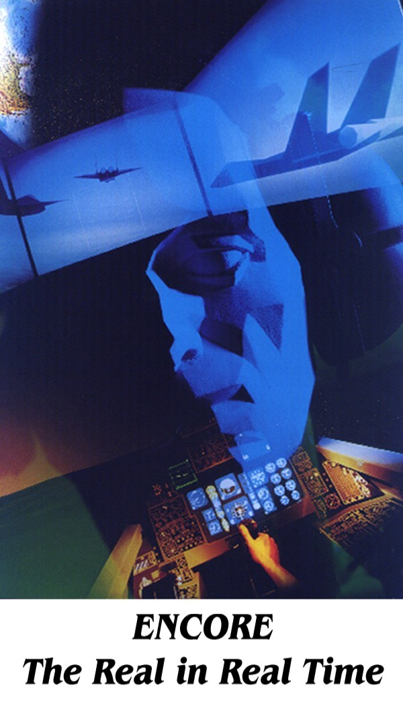

| service |
| home page |
| Site Map The Gathering of the Clans Clans of Ireland . . GOTC - Savvis Network Attention Savvis Network Users July 12, 2000 Savvis customers We have begun to block certain portions of the Savvis network. This means that some Savvis customers will not be able to send us email and may also be banned from portions of our sites. We are taking this step as a result of repeated porn spam from Savvis customers. |
|  | 5 September-October,1997 - Chicago Travel many web sites to explore. . Chicago Blind Computer Users Network This page has been granted THE MARY WARD SPEECH FRIENDLY BUTTERFLY AWARD COMPUTER USERS NETWORK NEWS Adaptive Technology for the Blind and Visually-Impaired THE COMPUTER NETWORK is a consortium of blind and visually impaired people who want to maintain up-to-date knowledge about computer technology. Network members pool knowledge and resources to help themselves and each other function at their best in this fast-moving electronic age. Newsletters with information of interest to blind computer users everywhere. |